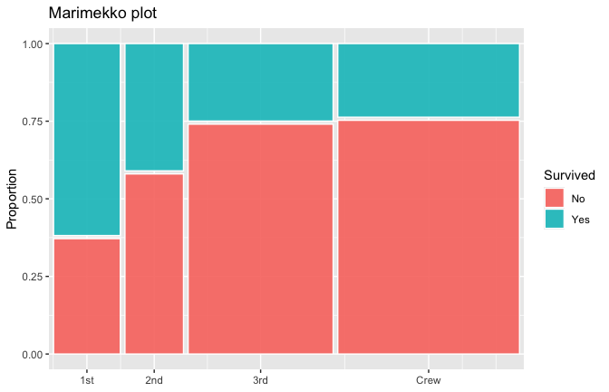
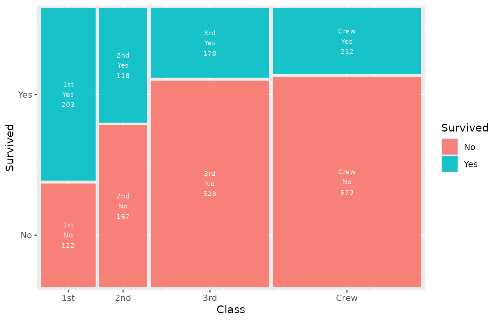
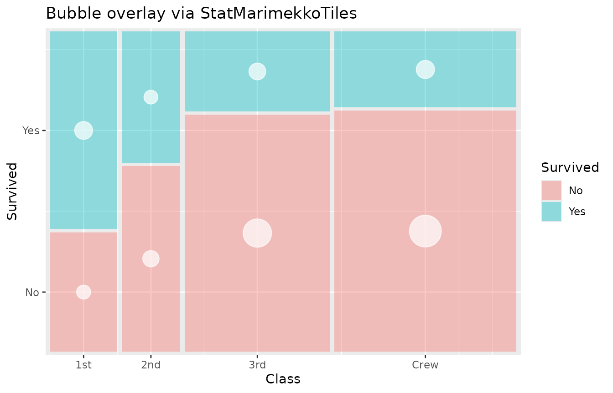
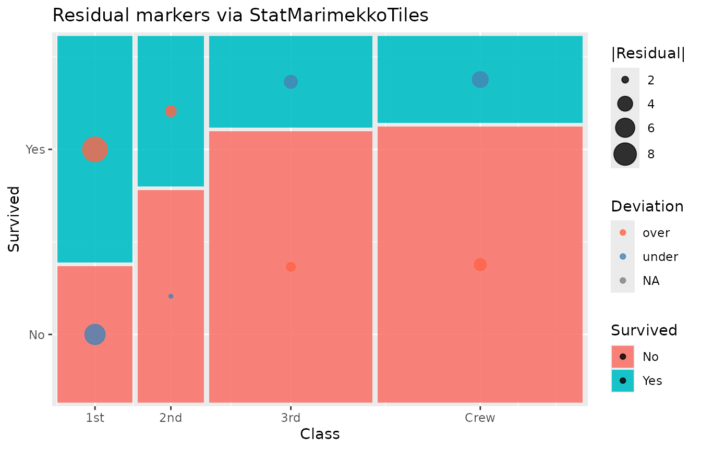
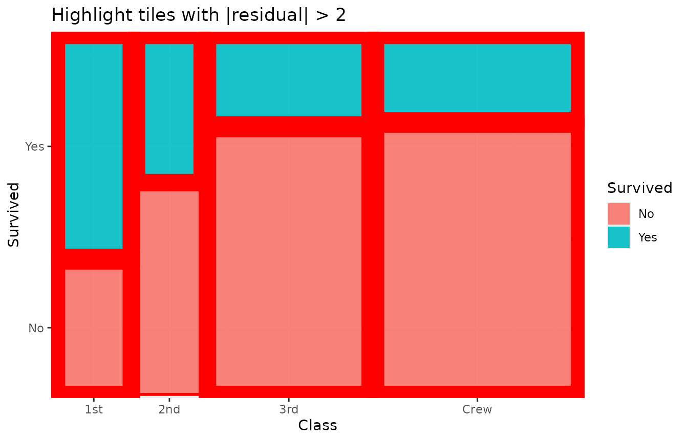
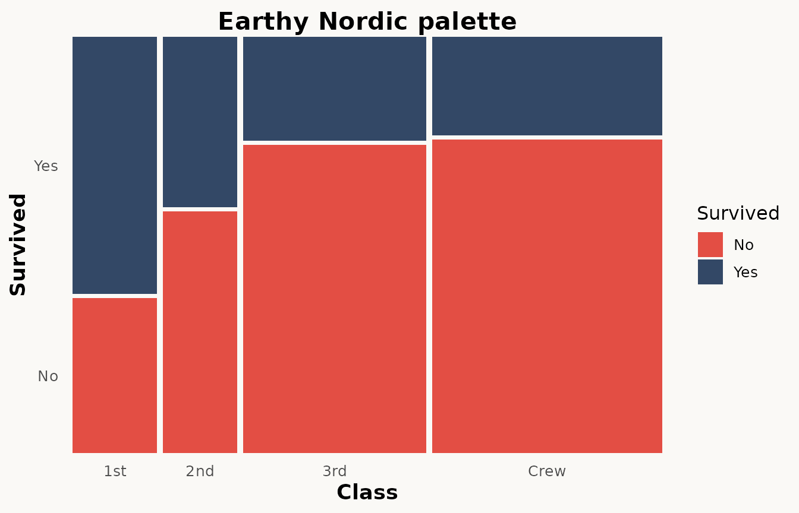
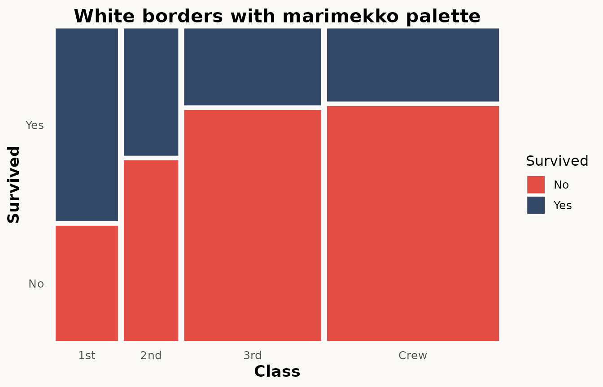

Advanced features
advanced-features.Rmd
library(ggplot2)
library(marimekko)
titanic <- as.data.frame(Titanic)This vignette covers the advanced features of marimekko
beyond the basics shown in vignette("getting-started").
Basic marimekko plot
ggplot(titanic) +
geom_marimekko(aes(fill = Survived, weight = Freq), formula = ~ Class | Survived)
Pearson residuals
Pearson residuals measure how much each cell deviates from the independence assumption. Positive residuals indicate more observations than expected; negative residuals indicate fewer.
Residuals are automatically computed and exposed as the
.residuals computed variable, which you can map to an
aesthetic via after_stat():
ggplot(titanic) +
geom_marimekko(
aes(
fill = Survived, weight = Freq,
alpha = after_stat(abs(.residuals))
),
formula = ~ Class | Survived
) +
scale_alpha_continuous(range = c(0.3, 1), guide = "none") +
labs(title = "Residual shading: stronger opacity = larger deviation")
You can also map residuals to colour instead of relying on fill:
ggplot(titanic) +
geom_marimekko(aes(fill = Survived, weight = Freq),
formula = ~ Class | Survived
) +
geom_marimekko_text(aes(
label = after_stat(round(.residuals, 1))
), colour = "white", size = 3) +
labs(title = "Pearson residuals as labels")
Three-variable nested mosaic
geom_marimekko() supports multi-variable formulas. A
three-variable formula (~ X | Y | Z) partitions the plot in
alternating directions (horizontal, vertical, horizontal):
- First split: horizontal by
X(column widths proportional toX) - Second split: vertical by
Ywithin each column - Third split: horizontal by
Zwithin each cell
ggplot(titanic) +
geom_marimekko(aes(fill = Survived, weight = Freq),
formula = ~ Class | Survived | Sex
) +
labs(title = "Nested mosaic: Class > Sex > Survived")
This produces a richer view than faceting because all three variables share a single coordinate space, making relative proportions directly comparable.
Y-axis labels
By default geom_marimekko() automatically labels both
axes with category names. The y-axis shows proportions from 0 to 1,
while the x-axis displays category labels at each column’s midpoint.
Data extraction with fortify
fortify_marimekko() returns computed tile positions as a
plain data frame without creating a plot. It accepts the same formula
syntax as geom_marimekko():
tiles <- fortify_marimekko(titanic,
formula = ~ Class | Survived, weight = Freq
)
head(tiles)
#> xmin xmax ymin ymax weight fill colour .proportion
#> 1st.No 0.0000000 0.1432303 0.0000000 0.3716308 122 No No 0.3753846
#> 1st.Yes 0.0000000 0.1432303 0.3816308 1.0000000 203 Yes Yes 0.6246154
#> 2nd.No 0.1532303 0.2788323 0.0000000 0.5801053 167 No No 0.5859649
#> 2nd.Yes 0.1532303 0.2788323 0.5901053 1.0000000 118 Yes Yes 0.4140351
#> 3rd.No 0.2888323 0.5999727 0.0000000 0.7403966 528 No No 0.7478754
#> 3rd.Yes 0.2888323 0.5999727 0.7503966 1.0000000 178 Yes Yes 0.2521246
#> .marginal Class Survived x y .residuals
#> 1st.No 0.05542935 1st No 0.07161517 0.1858154 -6.607873
#> 1st.Yes 0.09223080 1st Yes 0.07161517 0.6908154 9.565772
#> 2nd.No 0.07587460 2nd No 0.21603135 0.2900526 -1.867159
#> 2nd.Yes 0.05361199 2nd Yes 0.21603135 0.7950526 2.702959
#> 3rd.No 0.23989096 3rd No 0.44440254 0.3701983 2.289965
#> 3rd.Yes 0.08087233 3rd Yes 0.44440254 0.8751983 -3.315027Multi-variable formulas work too:
tiles_3 <- fortify_marimekko(titanic,
formula = ~ Class | Survived | Sex, weight = Freq
)
head(tiles_3)
#> xmin xmax ymin ymax weight fill colour
#> 1st.No.Male 0.00000000 0.12886214 0.0000000 0.3716308 118 Male Male
#> 1st.No.Female 0.13886214 0.14323035 0.0000000 0.3716308 4 Female Female
#> 1st.Yes.Male 0.00000000 0.04069104 0.3816308 1.0000000 62 Male Male
#> 1st.Yes.Female 0.05069104 0.14323035 0.3816308 1.0000000 141 Female Female
#> 2nd.No.Male 0.15323035 0.25983339 0.0000000 0.5801053 154 Male Male
#> 2nd.No.Female 0.26983339 0.27883235 0.0000000 0.5801053 13 Female Female
#> .proportion .marginal Class Survived Sex x
#> 1st.No.Male 0.96721311 0.053611995 1st No Male 0.06443107
#> 1st.No.Female 0.03278689 0.001817356 1st No Female 0.14104625
#> 1st.Yes.Male 0.30541872 0.028169014 1st Yes Male 0.02034552
#> 1st.Yes.Female 0.69458128 0.064061790 1st Yes Female 0.09696070
#> 2nd.No.Male 0.92215569 0.069968196 2nd No Male 0.20653187
#> 2nd.No.Female 0.07784431 0.005906406 2nd No Female 0.27433287
#> y .residuals
#> 1st.No.Male 0.1858154 -0.3491072
#> 1st.No.Female 0.1858154 -9.5038375
#> 1st.Yes.Male 0.6908154 0.5053790
#> 1st.Yes.Female 0.6908154 13.7580643
#> 2nd.No.Male 0.2900526 2.9817561
#> 2nd.No.Female 0.2900526 -6.9363838The returned columns are:
| Column | Description |
|---|---|
| Formula variables | One column per formula variable (e.g. Class,
Survived) |
fill |
The fill variable value |
xmin, xmax
|
Horizontal extent of the tile |
ymin, ymax
|
Vertical extent of the tile |
x, y
|
Tile center coordinates |
weight |
Aggregated count |
.proportion |
Conditional proportion within the parent tile |
.marginal |
Proportion of the grand total |
.residuals |
Pearson residual |
Extending with custom ggplot2 layers
The companion layers geom_marimekko_text(),
geom_marimekko_label() automatically read tile positions
from a preceding geom_marimekko() layer. You only need to
specify the label aesthetic:
ggplot(titanic) +
geom_marimekko(aes(fill = Survived, weight = Freq),
formula = ~ Class | Survived
) +
geom_marimekko_text(aes(
label = after_stat(paste(Class, Survived, weight, sep = "\n"))
), colour = "white", size = 2.5)
For more control, use fortify_marimekko() to pre-compute
tiles and pass them as data to any standard ggplot2 geom.
This lets you summarize, filter, or transform the tile data before
plotting:
tiles <- fortify_marimekko(titanic,
formula = ~ Class | Survived, weight = Freq
)
# Highlight cells with significant residuals
tiles$significant <- abs(tiles$.residuals) > 2
ggplot(titanic) +
geom_marimekko(aes(fill = Survived, weight = Freq),
formula = ~ Class | Survived
) +
geom_label(
data = tiles[tiles$significant, ],
aes(x = x, y = y, label = paste0("r=", round(.residuals, 1))),
fill = "yellow", size = 3, fontface = "bold"
) +
labs(title = "Significant deviations from independence (|r| > 2)")
Because fortify_marimekko() returns a plain data frame,
you can use any ggplot2 geom – geom_segment(),
geom_curve(), geom_tile(),
ggrepel::geom_label_repel(), etc.
Extending with StatMarimekkoTiles
The exported StatMarimekkoTiles ggproto object lets you
pair marimekko tile positions with any geom. While the
convenience wrappers geom_marimekko_text() and
geom_marimekko_label() cover the most common case (text
overlays), StatMarimekkoTiles gives you full control by
plugging directly into ggplot2::layer().
How it works
StatMarimekkoTiles does not compute tile positions
itself — it reads them from a preceding geom_marimekko()
layer via an internal shared environment. This means:
- A
geom_marimekko()layer must appear before any layer that usesStatMarimekkoTiles. - The stat returns one row per tile with columns
xmin,xmax,ymin,ymax,x,y(centre),weight,fill,.proportion,.residuals, and.tooltip. - You can reference any of these columns in
aes()viaafter_stat().
Example: bubble overlay
Map point size to weight to show tile counts as
bubbles:
ggplot(titanic) +
geom_marimekko(
aes(fill = Survived, weight = Freq),
formula = ~ Class | Survived, alpha = 0.4
) +
layer(
stat = StatMarimekkoTiles,
geom = GeomPoint,
mapping = aes(size = after_stat(weight)),
data = titanic,
position = "identity",
show.legend = FALSE,
inherit.aes = FALSE,
params = list(colour = "white", alpha = 0.7)
) +
scale_size_area(max_size = 12) +
labs(title = "Bubble overlay via StatMarimekkoTiles")
Example: residual markers
Colour and size encode deviation from independence:
ggplot(titanic) +
geom_marimekko(
aes(fill = Survived, weight = Freq),
formula = ~ Class | Survived
) +
layer(
stat = StatMarimekkoTiles,
geom = GeomPoint,
mapping = aes(
size = after_stat(abs(.residuals)),
colour = after_stat(ifelse(.residuals > 0, "over", "under"))
),
data = titanic,
position = "identity",
show.legend = TRUE,
inherit.aes = FALSE,
params = list(alpha = 0.8)
) +
scale_colour_manual(
values = c(over = "tomato", under = "steelblue"),
name = "Deviation"
) +
scale_size_continuous(range = c(1, 8), name = "|Residual|") +
labs(title = "Residual markers via StatMarimekkoTiles")
Example: rectangle outlines
Use GeomRect to draw highlighted borders around specific
tiles (e.g. tiles with large residuals):
ggplot(titanic) +
geom_marimekko(
aes(fill = Survived, weight = Freq),
formula = ~ Class | Survived
) +
layer(
stat = StatMarimekkoTiles,
geom = GeomRect,
mapping = aes(
linewidth = after_stat(ifelse(abs(.residuals) > 2, 1.5, 0))
),
data = titanic,
position = "identity",
show.legend = FALSE,
inherit.aes = FALSE,
params = list(colour = "red", fill = NA)
) +
labs(title = "Highlight tiles with |residual| > 2")
StatMarimekkoTiles vs
fortify_marimekko()
Both give access to the same computed tile data, but they serve different purposes:
StatMarimekkoTiles |
fortify_marimekko() |
|
|---|---|---|
| When | At render time (reactive) | Before plotting (static) |
| Input | Reads from a geom_marimekko() layer |
Standalone function call |
| Use case | Adding companion layers on the same plot | Pre-processing, filtering, or using tile data outside ggplot2 |
| Faceting | Automatically panel-aware | Manual panel handling |
Use StatMarimekkoTiles when you want to add layers that
stay in sync with geom_marimekko() parameters. Use
fortify_marimekko() when you need to transform or subset
the tile data before passing it to a geom.
Combining layers
Because marimekko produces standard ggplot2 layers, you
can freely combine multiple features:
ggplot(titanic) +
geom_marimekko(
aes(
fill = Survived, weight = Freq,
alpha = after_stat(abs(.residuals))
),
formula = ~ Class | Survived,
show_percentages = TRUE
) +
geom_marimekko_text(aes(label = after_stat(weight)),
colour = "white", size = 3.5
) +
scale_alpha_continuous(range = c(0.4, 1), guide = "none") +
theme_marimekko() +
labs(
title = "Full-featured mosaic plot",
subtitle = "Residual shading + counts + marginal %"
)
Independent x/y gaps
By default, gap controls both horizontal (between
columns) and vertical (between segments) spacing. Use gap_x
and gap_y to set them independently:
ggplot(titanic) +
geom_marimekko(aes(fill = Survived, weight = Freq),
formula = ~ Class | Survived, gap_x = 0.04, gap_y = 0
) +
labs(title = "Wide column gaps, no vertical gaps")
ggplot(titanic) +
geom_marimekko(aes(fill = Survived, weight = Freq),
formula = ~ Class | Survived, gap_x = 0, gap_y = 0.03
) +
labs(title = "No column gaps, visible vertical gaps")
Colour palette
marimekko ships with an Marimekko inspired color
pallette. Use theme_marimekko() oe use
scale_fill_manual(palette = marimekko_pal):
ggplot(titanic) +
geom_marimekko(aes(fill = Survived, weight = Freq),
formula = ~ Class | Survived
) +
theme_marimekko() +
labs(title = "Earthy Nordic palette")
By default, tile borders match the fill colour (borders blend in).
Set colour explicitly to restore visible borders:
ggplot(titanic) +
geom_marimekko(aes(fill = Survived, weight = Freq),
formula = ~ Class | Survived, colour = "white"
) +
theme_marimekko() +
labs(title = "White borders with marimekko palette")
Plotly interactivity
marimekko plots work with plotly::ggplotly() out of the
box:
In-aesthetic expressions
Unlike some mosaic packages, marimekko supports
arbitrary R expressions — both in formulas and inside
aes():
# Expressions work in formulas
ggplot(mtcars) +
geom_marimekko(formula = ~ factor(cyl) | factor(gear)) +
labs(
y = "Gears", fill = "Gears",
title = "factor() inside formula works"
)
Namespace-qualified usage
marimekko works correctly when called with
:: notation (e.g.,
marimekko::geom_marimekko()) without requiring
library(marimekko). This makes it safe to use inside other
packages via Imports rather than Depends.
Summary of parameters
| Parameter | Used in | Description |
|---|---|---|
formula |
geom_marimekko(), fortify_marimekko()
|
Formula specifying variable hierarchy
(~ a \| b \| c) |
gap |
geom_marimekko(), fortify_marimekko()
|
Spacing between tiles (fraction of plot area) |
gap_x |
geom_marimekko(), fortify_marimekko()
|
Horizontal gap (overrides gap for x) |
gap_y |
geom_marimekko(), fortify_marimekko()
|
Vertical gap (overrides gap for y) |
standardize |
fortify_marimekko() |
Equal-width columns (spine plot) |
colour |
geom_marimekko() |
Tile border colour. Default NULL (matches fill) |
show_percentages |
geom_marimekko() |
Append marginal % to x-axis labels |